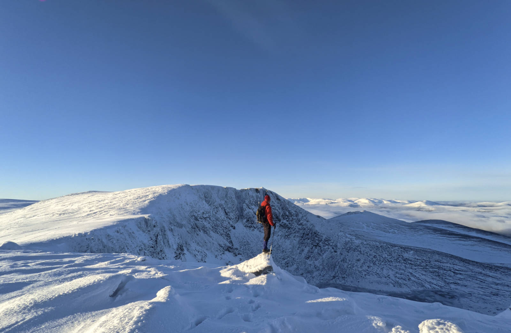

England! thy beauties are tame and domestic,
To one who has rov'd on the mountains afar:
Oh! for the crags that are wild and majestic,
The steep, frowning glories of dark Loch na Garr
The poet Lord Byron wrote this as the start of a famous poem, Lachin y Gair, in 1807. Loch na Garr, nowadays called Lochnagar, is an 1155 metre high, very popular hill to the South of the Cairngorms. We were staying in the neighbourhood and thought to have a look at what all the fuss was about.
The road to Loch Muick took about half an hour. The road was icy and it seemed easy to slip in the ditch. Something that luckily didn’t happen. The only dent the car got was acquired at the car park, to no effect of the slipperiness, though perhaps we should blame the 2 cm of ice on the car park floor for that ;).
The weather forecast was not that good, and we expected a cloudy day. Actually we expected to have a look at Meikle Pap, one of the pre-tops of Lochnagar. Why? Because one of the buoys near our house that we paddle to is Meikle Mee, and we thought it would be fun to visit its cousin.
However, while walking up, we noticed a tiny piece of blue sky. Not much further, the clouds suddenly broke and we were in a super beautiful winter wonderland. While close to Meikle Pap, we could look over the saddle to the corries of Lochnagar and oh wow, they were absolutely beautiful! Famous for good summer and winter climbing, we were not surprised to find climbers in one of the gullies, the snow conditions were probably very good.

At least snow conditions were good for us, though we had the luxury of following in other peoples trails. There was no need for crampons or axes, and because there was no wind it wasn’t cold at all! We were a bit late in the day, and met a sad hill runner who was on his way down, telling us that we were there for the good part of the day, he had probably just been in the clouds. We couldn’t resist making it all the way to the top. A total of 18 km was a bit more than planned, but we had headlamps to come down in the dark. It was so amazing to be up so high and see the sunset in these calm pristine conditions that we had an incredibly hard time stopping to look around and head back down. Eventually we did. What a place, and what amazing conditions!